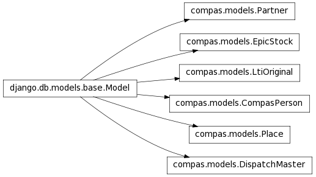

This application handles COMPAS database access.
Compas CompasPerson. We import them directly from compas Oracle using database view
DispatchMaster(code, document_code, dispatch_date, origin_type, origin_location_code)
COMPAS stock. We retrieve it from Oracle database view.
LTIs for office
Partner organization
Location model. Model based on compas Views & Tables

Decorator to wrap method that imports data from COMPAS. In case of error Importlogger object is created.
Creates response with provided data and inserts Content-Disposition header with file name.
Callback to allow pisa/reportlab to retrieve Images,Stylesheets, etc. uri is the href attribute from the html link element. rel gives a relative path, but it’s not used here.
Fetches all COMPAS-imported data, serializes and compresses them
Utility to generate history of actions at some objects
Reads file, decompresses serialized data,deserializes it and saves objects
Imports all LTIs from COMPAS
Imports organizations from COMPAS
Imports persons from COMPAS
Imports warehouses with locations from COMPAS
Imports all possible loss/damage reasons
Imports stock items or updates quantity
Renders template with context to HTML, than to PDF
Submits dispatched and validated waybills to COMPAS
Submits received and validated waybills to COMPAS
Utility to run whole import process. If no fails Success ImportLogger is created.
Utility to run special import process. If no fails Success ImportLogger is created.